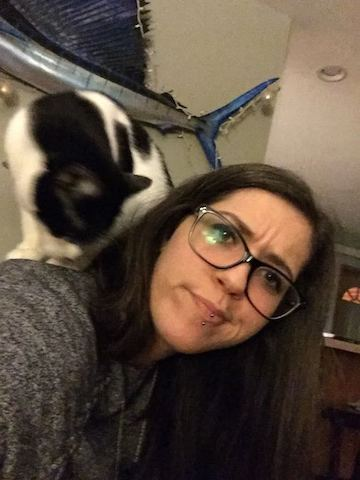

About Me

Hello! I am Hallie Weintraub, Quality Assurance Engineer. I participate on a team of developers who ensure our participant experience is a great one. I test across three platforms, our web, iOS and Android devices. I have recently entered the tech field after spending much of my life in customer service. Prior to finding my current company, I had opened a restaurant and ran it with my mom in New Glarus, Wisconsin. Running a restaurant is hard work, and doing it with family is a whole other experience.
I am originally from Olympia, Washington, they call us greeners. I loved living in the trees and near the ocean. I hope to return to the Pacific Northwest one day, but for now I love the rolling hills of SW Wisconsin. I lived all over and being in a city was nice, but I really do not think you can beat the "Wisconsin nice" of the people here.